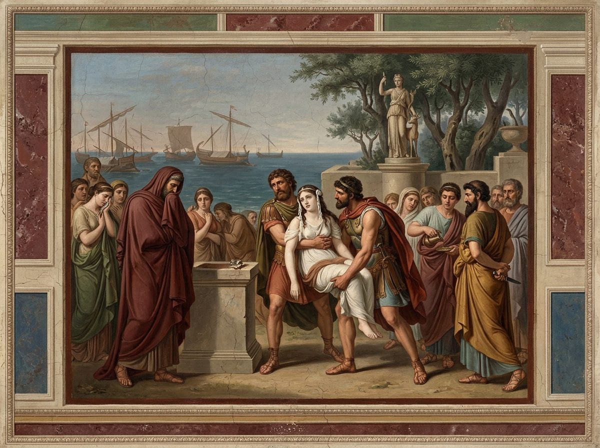

De Rerum Natura · on the nature of things
Invocation of Venus and the praise of Epicurus; nothing comes from nothing and nothing returns to nothing; unseen bodies, and the void; the properties and accidents of things; the first-beginnings are solid, eternal and without parts; against Heraclitus, Empedocles and Anaxagoras; the universe has no end in matter or in space.
This translation is plain, exact modern English free verse, kept line for line with the Latin of the Perseus text, which keeps the standard line numbering of Munro and Bailey, so that any English line can be checked against its original. It follows the printed text throughout. Where the text prints lines out of numerical order (15 before 14, 156-158 before 155, 1086 before 1085) the translation keeps the printed order and the printed numbers. Where lines are lost it prints an unnumbered gap and supplies nothing: the line marked 860a, the eight lines missing after 1093, the torn right-hand ends of 1068-1073, and the suspected gap after 1013. Where editors delete or emend, the notes say so and the translation keeps the printed word (the stray repeat at 769, the "body" of the sea at 271, "Aeolia" at 721), with one exception: at 520 it reads vacaret, "stood empty", with nearly every editor, since the printed vocaret gives no sense.
Lucretius writes a physics without a technical vocabulary and makes one as he goes, complaining twice in this book of "the poverty of the language" (139, 832). The translation does the same and keeps the terms rigid. Primordia, his commonest name for the ultimate bodies, is "first-beginnings" every time, and his shorter principia is "beginnings", so that the two Latin words stay apart; the other names he lists at 58-61 are kept distinct too (matter, generative bodies, seeds of things, first bodies). The word "atom" never appears in the verse, because Lucretius never uses it; the notes say it once. Inane is "void", never "vacuum". Concilium, the combination of first bodies that makes a thing, is "union"; simplicitas, their being without parts, is "singleness"; coniuncta and eventa are "conjoined" and "accidents". Ratio, the hardest word in the poem, is "reasoning" where it is the doctrine or the method, "by what principle" where it is instrumental, and "order" in the "highest order of heaven" at 54. Religio is "religion", the plain word; the proem's attack has no force if it is softened to "superstition". Animus is "mind", anima "spirit", never "soul"; mens beside animus is "thought". Simulacra are "images", the word Book 4 will make technical; elementa is "elements" even where it means letters, because the analogy between first-beginnings and letters (197, 823-829, 912-914) rests on the one word.
Lucretius repeats himself on purpose. Lines 146-148 close the proem and return at the head of three later books; 670-671 return three times; 75-77 come back as 594-596; 926-950 become the proem of Book 4; 738-739 return in Book 5. Where the Latin repeats, the English repeats its own earlier lines word for word, and the lines fixed in this book are binding on the rest of the poem. The same goes for the formulas of transition ("For the rest", "Come now", "as I showed you above, a little while before") and for the connectives. This is a poem that argues, and its "for", "further", "again", "finally" and "therefore" are its skeleton; the English keeps every one, which makes it more insistent than modern verse is used to being, and that insistence is Lucretius.
The book's shape is this. A hymn to Venus as the generative power of nature (1-43), with a prayer for peace in a bad time for Rome, sits beside a statement that the gods take no part in our affairs (44-49), and the notes record the editors' unease. Epicurus is praised, unnamed (62-79), and the charge of impiety is turned back on religion by the sacrifice of Iphianassa (80-101). The physics then proceeds in steps, each announced: nothing from nothing (146-214), nothing to nothing (215-264), unseen bodies (265-328), the void (329-417), body and void as the only two natures and everything else as their property or accident (418-482), the solidity, eternity and least parts of the first-beginnings (483-634). The polemic against Heraclitus, the four-element theorists and Anaxagoras (635-920) is the liveliest stretch, and the hardest to follow without its connectives. After the digression on the poet's own method (921-950) the book ends with the infinity of space and matter (951-1051) and the ridicule of a world with a center (1052-1117), broken by the two worst gaps in the text.
In the right margin: what Machiavelli wrote beside these lines in his own copy, Vatican MS Ross. 884, each linked to its folio. About the margin.
1Mother of Aeneas' race, pleasure1 of men and gods,
nourishing Venus, who beneath the gliding signs of heaven
fill with life the ship-bearing sea, the grain-bearing lands,
and throng them, since through you every kind of living thing
5is conceived and, risen, looks upon the light of the sun:
you, goddess, you the winds flee, you the clouds of heaven flee,
you and your coming; for you the artificer2 earth sends up∗fol. 1r
her sweet flowers, for you the levels of the sea laugh,
and the sky, made calm, shines with light poured wide.
10For as soon as the face of the spring day stands revealed
and the fertile breath of the west wind, unbarred, grows strong,
first the birds of the air, goddess, announce you and your
coming in, their hearts struck through by your power.
15Then wild beasts and herds go bounding over the glad pastures3
and swim the rushing rivers: so, captured by your charm,
each follows you eagerly wherever you go on to lead.
Then through seas and mountains and sweeping rivers,
through the leafy homes of birds and the greening plains,
striking seductive love into the breasts of all,
20you make them eagerly propagate their generations, kind by kind.
Since you alone steer the nature of things,
and without you nothing rises into the shining shores of light4,
and nothing comes to be glad, nothing lovely,
I long for you as my partner in writing these verses
25which I attempt to set down on the nature of things
for our son of the Memmii5, whom you, goddess, at every season
have willed to excel, adorned with every gift.
All the more, goddess, give my words a lasting charm.
Bring it about that meanwhile the savage works of war
30over all seas and lands be lulled and lie at rest;
for you alone can help mortals with tranquil peace,
since Mars6, mighty in arms, who rules the savage works
of war, often throws himself back into your lap,
conquered by the eternal wound of love,
35and so, gazing up, his rounded neck laid back,
feeds on love his hungry eyes, gaping at you, goddess,
and the breath of him, reclining, hangs upon your lips.
Goddess, as he lies back upon your holy body,
pour yourself around and over him, and from your lips
40pour out sweet speech, asking calm peace, glorious one, for the Romans;
for neither can we, in a bad time for our country, do this work
with an untroubled mind, nor can the famous offspring of Memmius
in such a pass be wanting to the common safety.
For the whole nature of the gods must, of itself, by necessity7
45enjoy immortal life in utmost peace,
removed from our affairs and separated far away;
for free from every pain, free from dangers,
strong in its own resources, needing nothing of ours,
it is neither won by services nor touched by anger.
50For the rest, lend ears set free, and a keen mind
withdrawn from cares, to true reasoning8,
so that my gifts, laid out for you with faithful care,
you do not, before they are understood, scorn and leave behind.
For I shall begin to set out for you the highest order
55of heaven and the gods, and unfold the first-beginnings9 of things,
from which nature creates all things, makes them grow, and feeds them,
and into which, when they perish, that same nature dissolves them,
which we, in giving our account, are used to calling matter
and the generative bodies of things, and to name
60seeds of things, and to use for these same things the term
first bodies, because from them, as first, all things are.
When human life lay foully before the eyes,
crushed on the earth beneath the weight of religion10,
which showed its head from the regions of heaven,
65looming over mortals with horrible aspect,
first a man of Greece11 dared to lift mortal eyes
against it, and first to take a stand against it;
him neither the fame of gods nor thunderbolts nor heaven
with its threatening growl held down; rather they goaded
70the keen courage of his mind the more, so that he longed
to be first to break the tight-barred gates of nature.
And so the living force of his mind prevailed, and far
beyond the flaming walls of the world12 he went out
and traveled the whole immensity in thought and mind13,
75from where he brings back to us, a victor, what can come to be
and what cannot, and how at last each thing's power is bounded,
by what principle, and its boundary-stone set deep14.
Therefore religion in its turn is thrown beneath our feet
and trampled; the victory lifts us level with heaven.

80In these matters I fear this: that you might think
you enter on the impious elements of reasoning and set foot
on the road of crime. Rather, the opposite: more often it is
religion that has borne the criminal and impious deeds.
As at Aulis, where the altar of the Virgin of the Crossways15
85was foully defiled with the blood of Iphianassa
by the chosen leaders of the Danaans, the first of men.
As soon as the ribbon, bound about her maiden hair,
streamed down in equal lengths on either cheek,
and she saw her father standing sorrowful before the altar,
90and beside him the attendants hiding the knife,
and the citizens shedding tears at the sight of her,
mute with fear, her knees giving way, she sank to the ground.
Nor could it help the poor girl at such a moment
that she had been the first to give the king the name of father;
95for lifted by men's hands and trembling she was led
to the altar, not so that, when the solemn rite was done,
she might be escorted by the ringing wedding-hymn,
but so that, pure, impurely16, at the very season of marriage,
she might fall, a grieving victim, slaughtered by her father,
100that a happy and favorable departure be granted the fleet.
So much evil could religion prompt.17
You yourself, at any moment now, overcome by the prophets'
terror-speaking words, will look to desert us.
For indeed how many dreams they can even now invent for you,
105dreams that could overturn the reasonings of your life
and trouble all your fortunes with fear!
And with reason: for if men saw a sure end
to their troubles, they would by some means find strength
to stand against the religions and the threats of prophets.
110As it is, there is no way to stand against them, no power,
since eternal punishments must be feared in death.
For it is not known what the nature of the spirit18 is,
whether it is born, or instead works its way into us at birth,
and whether it perishes together with us, torn apart by death,
115or visits the darkness of Orcus19 and his vast pools,
or by divine ordinance slips itself into other beasts,
as our Ennius20 sang, who first brought down
from lovely Helicon a crown of unfading leaf
to shine in fame through the Italian nations of men;
120and yet besides, that the precincts of Acheron exist
Ennius sets forth, declaring it in eternal verses,
where neither our spirits nor our bodies endure,
but certain images21, pale in strange ways;
from there, he recalls, the likeness of ever-flourishing Homer
125rose up before him and began to shed salt tears
and to unfold in words the nature of things.
Therefore, while we must give a good account of things
above, by what principle the courses of sun and moon
come about, and by what force each thing is carried on
130upon the earth, then above all with keen reasoning
we must see of what the spirit and the nature of the mind consist,
and what thing it is that meets us and terrifies our minds
when we are awake but stricken with sickness, or buried in sleep,
so that we seem to see and hear face to face
135those whose bones, after death, the earth embraces.
Nor does it escape my mind that the obscure findings of the Greeks
are hard to set in light in Latin verses,
especially since much must be done with new words
because of the poverty of the language22 and the newness of the things;
140but still your worth, and the hoped-for pleasure
of sweet friendship, urge me to bear any labor,
and lead me to keep watch through the calm nights,
searching with what words and with what song at last
I may spread clear lights before your mind
145by which you can see deep into hidden things.
This terror of the mind, then, and this darkness23
must be scattered not by the sun's rays or the bright shafts of day
but by the face and reasoning of nature.
Its first principle will take its starting-point for us from here:
150that nothing is ever begotten from nothing by divine will24.
Indeed, fear so holds all mortals in its grip
because they behold many things happening on earth and in the sky
the causes of whose workings they can in no way see,
and they suppose them to be done by divine power.
For these reasons, when we have seen that nothing can be created25
from nothing, then we shall more rightly discern from there
what we are seeking: both from what each thing can be created
155and in what manner all things come about without the labor of gods.
For if things came to be from nothing, out of all things
160every kind could be born; nothing would need a seed.
First, men could rise out of the sea, and out of the earth
the scaly race, and birds could burst out of the sky;
herds and other cattle, every kind of wild beast,
born at random, would occupy the tilled land and the wild.
165Nor would the same fruits stay constant on the trees,
but would change; all trees could bear all fruits.
For where there were no generative bodies for each thing,
how could there be a fixed mother for things?
But as it is, since each thing is created from fixed seeds,
170it is born and comes forth into the shores of light
from that place where the matter of each and its first bodies are;
and for this reason all things cannot be begotten from all,
because in fixed things there dwells a separate power.
Further, why do we see the rose poured forth in spring, grain in the heat,
175vines when autumn urges them on,
if not because, when fixed seeds of things at their own time
have flowed together, whatever is created is disclosed
while the seasons are at hand, and the living earth
brings tender things safely forth into the shores of light?
180But if they came from nothing, they would spring up suddenly
at uncertain intervals and in alien parts of the year,
since there would be no first-beginnings that could be kept
from generative union by an unfavorable season.
Nor again, for things to grow, would there be need of time
185for the meeting of seed, if they could grow out of nothing;
for little infants would suddenly become young men,
and trees, risen from the earth, would leap up all at once.
It is plain that none of this happens, since all things
grow little by little, as is fitting, from fixed seed,
190and as they grow they keep their kind; so that you can know
that each thing grows large and is nourished from its own matter.
To this is added that without the year's fixed rains
the earth could not send up its gladdening produce,
nor again could the nature of living things, kept apart from food,
195propagate its kind and preserve its life;
so that you should rather think that many bodies are common
to many things, as we see elements26 are to words,
than that anything could exist without beginnings.
Again, why could nature not produce men so huge
200that they could cross the sea on foot, wading through its shallows,
and tear great mountains apart with their hands,
and in living outlast many generations of the living,
if not because fixed matter has been assigned to things
for their begetting, from which it stands what can arise?
205Therefore it must be confessed that nothing can come from nothing,
since things need seed, from which each, once created,
can be brought forth into the tender breezes of the air.
Finally, since we see that tilled places surpass
the untilled, and yield better produce to our hands,
210there are, it is clear, first-beginnings of things in the earth
which we, turning the fertile clods with the plowshare
and working the soil of the earth, rouse to birth;
but if there were none, you would see each thing, without our labor,
come of its own accord to be much better.
215To this is added that nature dissolves each thing back
into its own bodies, and does not destroy things into nothing.
For if anything were mortal in all its parts,
each thing would suddenly perish, snatched from our eyes;
for there would be no need of any force that could bring about
220division among its parts and undo their bonds.
As it is, since each thing is made of eternal seed,
until a force has met it that can shatter things with a blow
or pierce within through the voids27 and dissolve them,
nature does not allow the destruction of anything to be seen.
225Further, whatever things time removes through age,
if it destroys them utterly, consuming all their matter,
from where does Venus lead the race of living things, kind by kind,
back into the light of life? Or, once led back, from where does the artificer earth
nourish and increase them, kind by kind, providing food?
230From where do native springs and rivers from far outside
keep the sea supplied? From where does the ether feed the stars?
For all things that are of mortal body
infinite time and the days gone by must have consumed.
But if in that space, in that time gone by, there have been
235those things from which this sum of things is made up, renewed,
they are surely endowed with an immortal nature.
Therefore things cannot, any of them, return to nothing.
Again, the same force and cause would destroy all things
indiscriminately, unless eternal matter held them,
240more or less entangled in its bonds with itself;
for a touch would surely be cause enough of death,
since there would be nothing of eternal body whose
fabric any force would have to unweave.
But as it is, since the bonds of the beginnings with one another
245are unlike, and matter is eternal,
things remain with body unharmed until a force
meets them found keen enough for the texture of each.
Therefore no thing returns to nothing, but all things
by division return to the bodies of matter.
250Finally, the rains perish when father ether28
has flung them headlong into the lap of mother earth;
but shining crops spring up, and branches grow green
on the trees; the trees themselves grow and are weighed down with fruit.
From this, in turn, our race and the race of wild beasts are fed,
255from this we see glad cities flower with children
and leafy woods on every side sing with new birds,
from this the cattle, weary and fat, through the glad pastures lay down
their bodies, and the white milky liquid
flows from the swollen udders; from this the new offspring
260on unsteady limbs frisk through the tender grass
and play, their young minds made drunk with unmixed milk29.
Therefore none of the things that are seen perish utterly,
since nature remakes one thing from another, and does not allow
anything to be born unless helped by another's death.
265Come now: since I have taught that things cannot be created
from nothing, nor, once born, be called back to nothing,
yet lest perhaps you begin to distrust my words
because the first-beginnings of things cannot be seen with the eyes,
hear further of bodies which you yourself must
270confess are among things and yet cannot be seen.
First, the roused force of the wind lashes the body of the sea30
and overturns huge ships and scatters the clouds,
at times, running across the plains in a swift whirlwind,
it strews them with great trees, and the mountaintops
275it harries with forest-breaking31 blasts: so with a fierce
roar the sea rages, and storms with a threatening growl.
Therefore winds, beyond doubt, are unseen bodies
that sweep the sea, the lands, and finally the clouds of heaven,
and harry them and snatch them up in a sudden whirlwind;
280nor do they flow or spread their havoc in any other way
than when the soft nature of water is suddenly carried
in an overflowing stream, swollen with abundant rains
by a great downrush of water from high mountains,
hurling together broken pieces of forests and whole trees,
285nor can strong bridges bear the sudden force
of the oncoming water: so, turbid with great rain,
the river runs against the piers with mighty strength,
makes havoc with a great roar, and rolls beneath its waves
great stones, and dashes down whatever stands against its flood.
290So therefore the blasts of wind too must be carried,
which, when like a strong river they have leaned
toward any quarter, drive things before them and dash them down
with repeated onsets, at times in a twisting eddy
seize them and carry them off in a swift, spinning whirlwind.
295Therefore, again and again, winds are unseen bodies,
since in their deeds and ways they are found to rival
great rivers, which are of visible body.
Then again, we perceive the various odors of things
and yet never see them coming to our nostrils,
300nor do we look upon hot heats, nor can we take in cold
with our eyes, nor are we used to seeing voices;
yet all these must consist of bodily
nature, since they can strike upon the senses;
for to touch and be touched no thing can, unless it is body.
305Again, clothes hung up on the wave-breaking shore
grow damp, and the same, spread out in the sun, grow dry.
But neither how the moisture of water settled in them
has been seen, nor again how it fled before the heat.
Therefore the moisture is dispersed into small parts
310which the eyes can in no way see.
Indeed, as many years of the sun come round again,
a ring on the finger grows thin beneath from wearing,
the falling of the drip hollows a stone, the curved iron
plowshare secretly wastes away in the fields,
315and the stone pavements of the roads we see already
worn by the feet of the crowd; then, beside the gates, bronze32
statues show their right hands thinned
by the touch of those who greet them, often, and of those passing by.
These things, then, we see are diminished, since they are worn away.
320But what bodies depart from them at any given time
envious nature has shut off from the power of sight.
Lastly, whatever the passing days and nature add to things
little by little, compelling them to grow in due measure,
no sharpness of the eyes, however it strains, can observe;
325nor again, in whatever grows old with age and wasting,
nor in rocks that overhang the sea, eaten through by the gnawing salt,
could you discern what they lose at each moment.
Therefore nature carries on her work through unseen bodies.
And yet not all things are held packed tight on every side
330by the nature of body; for there is void33 in things.
To have learned this will be of use to you in many matters,
and will not let you wander, doubting and always asking
about the sum of things, and distrusting my words.
Therefore there is place, untouchable, void and empty.
335For if there were not, by no means could things
move at all; for what stands out as the office34 of body,
to obstruct and stand in the way, would at every moment be present
in all things; and so nothing could go forward,
since nothing would make a beginning of giving way.
340But as it is, through seas and lands and the heights of heaven,
many things, in many ways, by varied principle, moving
we see before our eyes, which, if there were no void,
would not so much be robbed of their restless motion and lack it
as never have been brought to birth at all by any means,
345since matter, packed tight on every side, would have lain at rest.
Further, however solid things may be thought to be,
you may yet see from this that they are of loose and porous body.
In rocks and caves the liquid moisture of the waters
seeps through, and all things weep with plentiful drops.
350Food spreads itself through the whole body of living things;
trees grow and pour out their fruit in season,
because from the deepest roots, into the whole tree,
through trunks and through branches, all their food is spread.
Voices pass through walls, and through the closed rooms of houses
355fly across; stiffening cold seeps through to the bones.
And unless there were void spaces through which each of the bodies
could pass, you would see this happen by no means at all.
Finally, why do we see some things outweigh other things
in weight, though they are no larger in shape?
360For if there is as much in a ball of wool as there is
of body in lead, it is fitting that they weigh just as much,
since it is the office of body to press all things downward,
while the nature of void, on the contrary, stays without weight.
Therefore what is just as large and yet is seen to be lighter
365plainly declares that there is more void in it;
but the heavier, on the contrary, proclaims there is more body
in it, and that it holds much less of the empty within.
There is therefore, plainly, that which with keen reasoning
we are seeking, mixed in with things: what we call void.
370In these matters, so that it may not lead you from the truth,
I am compelled to forestall what certain men35 invent.
They say the waters give way to the scaly creatures as they thrust
and open liquid paths, because the fish leave places behind them
into which the yielding waves can flow together;
375so too, they say, other things can move among themselves
and change their place, though all things are full.
All this, of course, has been accepted on false reasoning.
For where, in the end, will the scaly creatures be able to go forward
unless the waters give them room? And again, where will the waves
380be able to withdraw, when the fish cannot go on?
Therefore either all bodies must be deprived of motion,
or we must say that void is mixed in with things,
from which each thing may take its first start of moving.
Lastly, if two broad bodies, after colliding,
385spring swiftly apart, then surely the air must take possession
of all the void that comes to be between the bodies.
That air, again, though it flows in with currents speeding round,
still will not be able at one moment to fill the whole
space; for it must occupy first one and then
390the next place, before the whole can be possessed.
But if someone perhaps, when the bodies have sprung apart,
thinks this happens because the air condenses itself,
he is wrong; for then an emptiness comes to be that was not there before,
and likewise an emptiness is filled that stood there before,
395nor can air be condensed in such a way,
nor, if it could, could it, I think, without void
draw itself into itself and gather its parts together.
Therefore, however long you may delay with objections,
you must still confess that there is void in things.
400And many more, besides, I could set before you, recounting
arguments, to scrape together belief for my words.
But for a keen mind these small tracks
are enough, through which you yourself can come to know the rest.
For as hounds very often, of a mountain-ranging beast,
405find out with their noses the resting places hidden in leaves,
once they have set themselves on the sure tracks of its path,
so you yourself, on your own, will be able to see one thing from another
in such matters, and to work your way into all
the unseen lurking places and drag the truth out of them.
410But if you are sluggish, or shrink back a little from the matter,
this I can promise you plainly, Memmius:
such generous draughts, drawn from great springs,
will my sweet tongue pour out from my rich heart
that I fear slow old age will first creep through
415our limbs and loosen in us the barriers of life
before, in verses, on any single matter, the whole store
of arguments has been sent through your ears.
But now, to resume and weave to its end in words the work begun:
all nature, then, as it is in itself, has been founded
420on two things; for there are bodies and there is void,
in which these are set and through which they move this way and that.
For that body exists by itself is declared by the sense
common to all36; and unless trust in this stands first and firm,
there will be nothing to appeal to concerning hidden things
425by which we could confirm anything by reasoning of the mind.
Then again, place and space, which we call void,
if it did not exist, bodies could not be set anywhere
at all, nor move in any direction this way and that;
as I showed you above, a little while before.
430Further, there is nothing that you could say is, from all
body disjoined, and set apart from the void,
to be found as a third nature, as it were, in the count.
For whatever will exist must itself be something,
of bulk large or small, so long as it exists;
435and if it has touch, however light and slight,
it will add to the count of body and join its sum;
but if it is untouchable, unable on any side
to stop anything passing through it on its way,
then this, of course, will be the empty, which we call void.
440Again, whatever will exist by itself will either act
or must itself be acted upon by other things acting,
or be such that things can exist and be carried on in it.
But nothing can act or be acted upon without body,
nor again provide place except the void and empty.
445Therefore besides void and bodies no third nature
by itself can be left in the number of things,
neither one that falls at any time under our senses
nor one that anyone can grasp by reasoning of the mind.
For whatever things have a name, you will find them either conjoined37
450to these two things, or you will see that they are their accidents.
A conjoined property is that which can nowhere, without a deadly
division, be disjoined and parted from the thing,
as weight is to stones, heat to fire, wetness to water,
touch to all bodies, untouchability to void.
455Slavery, on the other hand, poverty and riches,
freedom, war, concord, and the other things at whose
coming and going nature remains unharmed,
these we are used, rightly, to calling accidents.
Time38 likewise does not exist by itself, but from things themselves
460our sense takes in what has been carried through in time gone by,
then what thing is at hand, and what will follow after;
nor must it be admitted that anyone senses time by itself,
apart from the motion of things and their calm rest.
Finally, when they say the abduction of Tyndareus' daughter39
465and the conquest of the Trojan-born nations in war "are", we must take care
that they do not force us to admit these things exist by themselves,
since the generations of men whose accidents these were
have been carried off already by an age gone past recall;
for one thing will be said to be an accident of the lands40, another
470of the regions themselves, whatever has been done.
Finally, if there had been no matter of things,
and no place and space, in which each thing is carried on,
never would the fire, kindled by love for the beauty of Tyndareus' daughter,
glowing beneath the Phrygian breast of Alexander,
475have lit the famous contests of savage war,
nor would the wooden horse, unknown to the Trojans, have set Pergamum
ablaze by its night-time delivery of the sons of the Greeks;
so that you may see clearly that all deeds done, from the ground up,
do not exist or have being by themselves as body does,
480nor are spoken of on the same principle as void,
but rather that you may justly call them accidents
of body and of place, in which each thing is carried on.
Further, bodies are partly the first-beginnings of things,
partly those that are formed from a union of beginnings41.
485But those that are the first-beginnings of things no force
can quench; for it is by solid body that they prevail.
And yet it seems hard to believe that anything
among things can be found to be of solid body.
For the thunderbolt of heaven passes through the walls of houses,
490as do shouting and voices; iron grows white-hot in fire,
and rocks leap apart in fierce and seething heat;
when the hardness of gold is shaken loose and dissolves in heat,
then the ice of bronze42, conquered by flame, melts away;
heat seeps through silver, and so does penetrating cold,
495since, gripping cups in hand as is the custom, we have felt both
when the dew of water was poured in from above.
To such a degree there seems to be nothing solid in things.
But since true reasoning and the nature of things nonetheless
compel us, attend, while in a few verses we make it plain
500that there are things which consist of solid and eternal body,
which we teach are the seeds of things and their first-beginnings,
from which the whole sum of things now stands created.
To begin with, since the twofold nature of two things,
far unlike each other, has been found to exist,
505of body and of place, in which each thing is carried on,
each of necessity must exist by itself and pure.
For wherever there is empty space, which we call void,
there body is not; and further, wherever body
holds its place, there empty void by no means exists.
510The first bodies, therefore, are solid and without void.
Further, since there is void in things that have been born,
solid matter must stand around it;
nor can anything be proved by true reasoning
to hide void in its body and to hold it within,
515unless you grant that what encloses it stands solid.
And that, further, can be nothing but a union
of matter, such as could enclose the void in things.
Matter, therefore, which consists of solid body,
can be eternal, while all else is dissolved.
520Then again, if there were nothing that stood empty43 as void,
all would be solid; unless, on the other hand, there were definite bodies
to fill up whatever places they occupied,
all the space there is would stand as empty void.
Body, therefore, is plainly marked off from void
525in alternation, since neither does the wholly full exist
nor, again, the wholly empty; there are, then, definite bodies
that can mark off empty space from full.
These can neither be dissolved when struck by blows from outside
nor, again, be unravelled by being pierced to the core,
530nor, assailed in any other way, can they be made to give;
as I showed you above, a little while before.44
For nothing, it seems, can be crushed without void,
nor broken, nor split in two by cutting,
nor take in moisture, nor likewise seeping cold,
535nor penetrating fire, by which all things are undone.
And the more void each thing holds within it,
the more it gives way when assailed to the core by these.
Therefore if the first bodies are solid and without void,
as I have taught, they must be eternal.
540Further, unless matter had been eternal,
before now all things would have gone back utterly to nothing,
and from nothing would have been reborn whatever we see.
But since I taught above that nothing can be created
from nothing, nor what has been born be called back to nothing,
545the first-beginnings must be of immortal body,
into which all things can be dissolved at their last hour,
so that matter may be at hand for the renewal of things.
The first-beginnings, therefore, are of solid singleness45,
nor in any other way could they have been kept through the ages
550to renew things, from time already infinite.
Finally, if nature had set no limit
to the breaking of things, by now the bodies of matter
would have been so worn down by the breaking of past ages
that nothing conceived from them, from a fixed time on,
555could reach the furthest goal of its age.
For we see that anything can be dissolved more quickly
than made again; therefore whatever the long span of days,
the infinite age of all the time gone before,
had broken till now, confounding and dissolving it,
560could never be repaired in the time remaining.
But as it is, a fixed limit to breaking, plainly,
remains assigned, since we see each thing made again,
and at the same time fixed seasons, kind by kind, stand set
for things, in which they can reach the flower of their age.
565Add to this that, although the bodies of matter
are most solid, an account can still be given of all things
that come to be soft, air, water, earth, vapors,
how they come to be and by what force each is carried on,
since void is mixed, once and for all, in things.
570But if, on the contrary, the first-beginnings of things were soft,
how hard flints and iron could be created
no account could be given; for utterly all
nature will lack a beginning for its foundation.
They are, therefore, strong in solid singleness,
575and by a denser union of them all things
can be packed tight and show forth sturdy strength.
Further, if no limit has been set to the breaking
of bodies, still, out of eternal time, certain bodies
must even now survive in things,
580such as have not yet been assailed by any danger.
But since they are endowed with a fragile nature,
it is inconsistent that they could have lasted through eternal time,
harried through the ages by numberless blows.
Finally, since a limit is set for things, kind by kind,
585to their growing and their holding on to life,
and since what each can do by nature's covenants46,
and what, further, each cannot, stands decreed,
nor is anything changed, but all things are so constant
that the varied birds, all of them in their order,
590show the markings of their kind upon their bodies,
they must surely also have a body of unchangeable
matter; for if the first-beginnings of things
could be overcome in some way and be changed,
it would then be uncertain, too, what can come to be
595and what cannot, and how at last each thing's power is bounded,47
by what principle, and its boundary-stone set deep,
nor could the generations, kind by kind, so often repeat
the nature, the manners, the diet, and the movements of their parents.
Then further, since there is in each case an outermost point48
600of that body which our senses can no longer
make out, that point, beyond doubt, stands without parts
and consists of a least nature, and was never
separate by itself, nor will it have the power to be hereafter,
since it is itself a part of another, the first and single part;
605then other parts and others, alike, in their order,
in close-packed column fill out the nature of the body;
and since these cannot stand by themselves, they must
cling where they can by no means be torn away.
The first-beginnings, therefore, are of solid singleness,
610and they cohere tightly, packed with least parts,
not combined out of a gathering of those parts,
but rather strong in eternal singleness;
from them nothing can be torn away, nothing now diminished,
so nature allows, keeping them in reserve as seeds for things.
615Further, unless there is a least, the very smallest
bodies will consist of infinite parts,
since indeed the half of a half will always have
its own half, and nothing will set a limit.
Therefore between the sum of things and the least of things
620there will be nothing to tell them apart; for however utterly
infinite the whole sum may be, still the smallest things there are
will consist of infinite parts just the same.
And since true reasoning cries out against this and denies
that the mind can believe it, you must yield and admit
625that there are things which stand endowed with no parts now
and consist of a least nature. And since these exist,
you must admit that those, too, are solid and eternal.
Finally, if to break all things up into least parts
had been the custom of the nature of things, the creator49,
630that same nature could restore nothing from them now,
because what is furnished with no parts
cannot have the things that generative matter
must have: various connections, weights, blows,
collisions, motions, by which each thing is carried on.
635Therefore those who have thought that the matter of things is
fire, and that the sum of things consists of fire alone,
seem to have slipped greatly from true reasoning.
Their leader, Heraclitus50, is the first to enter the battle,
bright in fame for his dark speech, more among the empty-headed
640than among the serious Greeks who seek the truth;
for fools admire and love above all those things
which they see lurking under twisted words,
and they set up as true whatever can prettily touch
the ears and is painted over with a charming sound.
645For why should things be so various, I ask,
if they are created out of fire, one and pure?
For it would avail nothing for hot fire to be made dense
or made rare, if the parts of fire had the same
nature which fire as a whole has as well.
650For the heat would be fiercer with its parts drawn together,
and fainter, again, with them scattered and thrown apart.
More than this there is nothing you might suppose could happen
under such conditions, far less that so great a variety
of things could arise from fires made dense and rare.
655This too: if they were to grant void mixed in with things,
fires could be made dense and be left rare;
but because they see many things that would run against them
and shrink from leaving pure void in things,
while they fear the steep way, they lose the true road,
660nor again do they see that, with void taken from things,
all things are made dense, and out of all things one
body is made, which could send nothing swiftly from itself,
as heat-bringing fire throws out light and warmth,
so that you may see it is not made of close-packed parts.
665But if perhaps they believe that by some other principle
fires can be quenched in combining and change their body,
if, that is, they will not in any part hold back from doing this,
then beyond doubt the heat will perish utterly into nothing,
all of it, and from nothing will come whatever is created;
670for whatever is changed and passes out of its own bounds,51
this at once is the death of what it was before.
Therefore something must survive in them unharmed,
so that all things do not return utterly to nothing for you,
and the store of things, reborn from nothing, grow strong.
675Now then, since there are certain bodies, utterly sure,
which keep their nature always the same,
by whose going away or coming in and change of order
things change their nature and bodies are transformed,
you may know that these bodies of things are not of fire.
680For it would make no difference for some to withdraw and go away
and others to be added, and some to change their order,
if all of them still kept the nature of heat;
for whatever they created would in every way be fire.
But in truth, as I think, it is so: there are certain bodies whose
685collisions52, motions, order, position, shapes
make fires, and, their order changed, change
their nature, and they are not like fire, nor like any
other thing which could send bodies
to the senses and by contact touch our touch.
690Further, to say that all things are fire, and that no
true thing exists in the number of things except fire,
as this same man does, seems utter madness.
For he himself, starting from the senses, fights against the senses
and shakes them, on which all belief depends,
695by which this fire he names became known to him;
for he believes that the senses truly know fire,
but does not believe the rest, which are no less clear.
And this seems to me as empty as it is mad;
for to what shall we appeal? What can be surer for us
700than the senses53 themselves, by which to mark true and false?
Further, why should anyone rather do away with all things
and wish to leave the nature of heat alone,
than deny that fires exist and still leave some other nature?
For it seems equal madness to say either.
705Therefore those who have thought that the matter of things is54
fire, and that the sum of things can consist of fire,
and those who have set up air55 as the beginning
for begetting things, or whoever have thought that water
by itself shapes things, or that earth creates
710all things and is turned into the natures of all things,
seem to have strayed greatly and far from the truth.
Add also those who double the first-beginnings of things,
joining air to fire and earth to liquid,
and those who think that out of four things all things can
715grow forth, out of fire, earth, and breath56, and rain.
Of these, first among them is Empedocles57 of Acragas,
whom the island bore within the three-cornered shores of its lands,
around which, flowing with great windings, the Ionian
sea sprinkles salt spray from its gray-green waves,
720and with its narrow strait the rushing sea divides with its waves
the shores of Aeolia's58 lands from the island's borders.
Here is vast Charybdis, and here the rumblings of Etna
threaten that the angers of its flames are gathering again,
so that its force may once more vomit fires burst from its jaws
725and carry again to the sky the lightning-flashes of its flame.
And while this great region seems in many ways a wonder
to the races of men, and is said to be worth the seeing,
rich in good things, fortified with a great force of men,
yet it seems to have had in it nothing more glorious than this man,
730nothing more holy, more marvelous, or more dear.
Indeed the songs of his divine breast
cry aloud and set forth his glorious discoveries,
so that he scarcely seems born of human stock.
Yet he, and those we spoke of above, who are inferior
735remarkably in many ways and much the lesser,
though they discovered many things well and as if divinely,
and gave answers as from the inner shrine of the heart
more holy and with far surer reasoning than
the Pythia59, who speaks from the tripod and the laurel of Phoebus,
740yet over the beginnings of things they came to ruin,
and there, great as they were, they fell heavily with a great fall.
First, because they set up motions with void taken from things,
and yet leave things soft and rare,
air, sun, fire, earths, animals, crops,
745and still do not mix void into their body;
next, because they will make no limit at all to the cutting
of bodies, and set no halt to their breaking,
and nothing at all to exist in things as a least,
when we see that the outermost point of each thing
750is that which to our senses seems to be least,
so that you may infer from this that in things you cannot see
the outermost point they have stands as a least.
Add to this as well that, since they make the first-beginnings of things
soft, things which we see to be born
755and to be of mortal body, it follows that utterly
the sum of things must by now return to nothing,
and the store of things, reborn from nothing, grow strong;
and how far each of these stands from the truth you will see now.
Next, they are in many ways hostile and a poison
760to one another; therefore either, meeting, they will perish,
or they will so scatter as, when a storm is gathered,
we see thunderbolts scatter, and rains and winds.
Finally, if all things are created out of four things,
and all things are dissolved back again into those things,
765why can those any more be called the first-beginnings of things
than things, the other way round, be thought to be theirs?
For they are born by turns, and change their color
and their whole nature among themselves from all time.
we see the thunderbolts scatter, and the rains and winds.60
770But if perhaps you think the body of fire and of earth
come together, and the airy breezes and the moisture of liquid,
so that in their union nothing changes their nature,
no thing can be created for you out of them,
not a living thing, not one with a lifeless body, like a tree;–fol. 14v
775for each thing, in the meeting of the varied heap,
will show its own nature, and air will be seen, mixed,
to remain together with earth and with a certain moisture.
But the first-beginnings, in the begetting of things, must
bring to bear a nature secret and unseen,
780so that nothing stands out to fight against and obstruct–fol. 14v
whatever is created from being properly what it is.
Further, they start again from heaven and its fires,
and make fire first turn itself into the breezes
of air, from this the rain be born, and earth be created
785out of rain, and from earth all things return in reverse,
moisture first, after it air, then heat,
and these to change among themselves without cease, to travel
from heaven to earth, from earth to the stars of the world.
This the first-beginnings must by no means do.
790For something unchangeable must survive,
so that things are not all brought back utterly to nothing;
for whatever is changed and passes out of its own bounds,
this at once is the death of what it was before.
Therefore, since the things we spoke of a little before
795come into change, they must consist
of others, which can nowhere be converted,
so that all things do not return utterly to nothing for you;
why not rather posit certain bodies endowed with such
a nature that, if perhaps they have created fire,
800the same, with a few taken away and a few added,
their order and motion changed, can make the breezes of air,
and so all things be changed, some into others?
'But the plain fact shows openly,' you say, 'that into the breezes
of air all things grow up out of the earth and are fed;
805and unless the season, at a favorable time, is generous
with rains, so that the trees sway under the melting of the clouds,
and the sun for its part warms them and gives its heat,
crops, trees, and living things could not grow.'
Of course; and unless dry food and soft moisture
810helped us, our body would waste, and then all life too
would be loosed from all our sinews and bones;
for beyond doubt we are helped and nourished
by certain things, and other things in turn by certain others.
No wonder: because many first-beginnings, common in many ways
815to many things, are mixed together in things,
for that reason varied things are nourished by varied things.
And it often matters greatly, for the same first-beginnings,
with what and in what position they are held together,
and what motions they give and receive among themselves;
820for the same make up heaven, sea, lands, rivers, sun,
the same make crops, trees, living things,
but they move mixed with different things and in different ways.
Indeed, everywhere in these very verses of ours
you see many elements common to many words,
825though you must still admit that the verses and the words
differ from one another both in sense and in the sound they make.
So much can elements do by a change of order alone;
but those that are the first-beginnings of things can bring
more to bear, from which varied things can each be created.
830Now let us also examine the homoeomeria61 of Anaxagoras,ὁμοιομέρειανAnaxagoras's homoeomeria, the Greek word Lucretius transliterates at 830, written out in Greek letters beside it. Pairs with the Greek gloss at the head of Book 2 (fol. 20v).fol. 15v
as the Greeks call it, which to name in our own tongue
the poverty of our native speech does not allow us;
but still the thing itself is easy to set out in words.
To begin with, when he speaks of the homoeomeria of things,
835he means, you see, that bones from tiny and minute
bones, and that from tiny and minute
bits of flesh, flesh is born, and blood is created
from many drops of blood coming together among themselves,
and he thinks gold can be formed out of specks
840of gold, and earth grow together out of little earths,
fires out of fires, moisture be made of moistures,
and the rest he imagines and supposes on a like principle.
Nor yet that there is void in things in any part
does he grant, nor that there is an end to the cutting of bodies.
845Therefore in both parts of his reasoning he seems to me
to go astray just as those did of whom we spoke above.
Add that he imagines first-beginnings far too weak;
if first-beginnings are what stand endowed with a nature
like that of things themselves, and labor just as they do
850and perish, and nothing reins them back from destruction.
For which of them will hold out under heavy pressure
so as to escape death, beneath the very teeth of death?
Fire, or moisture, or air? Which of these? Blood or bones?
None, I think, when every thing will be, utterly and equally,
855as mortal as those things we see plainly
before our eyes perish, overcome by some force.
But that things cannot fall back into nothing, nor again
grow out of nothing, I call to witness the things proved before.
Further, since food increases the body and nourishes it,
860we may know that veins and blood and bones
* * *62
or if they say that all foods are of mixed body
and have in them small bodies of sinews,
and bones, and veins altogether, and parts of gore,
it will follow that all food, both the dry and the liquid itself,
865must be thought to consist of things of foreign kind,
of bones and sinews and serum and blood mixed together.
Further, whatever bodies grow up out of the earth,
if they are in the earth, the earth must consist
of things of foreign kind, which rise up out of the earth.
870Transfer the argument again; you may use the very same words:
if flame lies hidden in wood, and smoke and ash,
wood must consist of things of foreign kind;
further, that whatever bodies the earth feeds and increases
consist of things of foreign kind, which rise out of the wood.63
875Here there is left a certain slender chance of hiding,
which Anaxagoras takes up for himself, holding that every
thing lies hidden, mixed in among all things, but that one thing
appears, the one of which the most parts are mixed in
and lie more ready to hand and set in the forefront.
880But this is driven far away from true reasoning;
for it would then follow that grain too, when by the menacing
strength of the stone it is crushed, would often send out some sign
of blood, or of some other thing that is nourished in our body.
When we grind them stone upon stone, it would be fitting for gore
885by a like principle to ooze from grasses too, and often,
and for them to send out juices, sweet drops of a savor like
the savor of milk in the udder of the wool-bearing ewe;
and, of course, that when clods of earth are often crumbled,
kinds of grasses and grains and leaves should be seen
890parceled out through the earth, lying hidden in tiny bits;
and finally, that ash and smoke should be seen in wood
when it was snapped across, and tiny fires lying hidden.
Since the plain fact shows that none of these things happens,
you may know that things are not so mixed in things,
895but rather that seeds, mixed in many ways, must lie hidden
in things, seeds common to many things.
"But often on great mountains," you say, "it happens that the tall
trees' neighboring tops are rubbed at their summits
against each other, as the strong south winds force them to it,
900until a flower of flame springs up and they blaze."
Indeed so; and yet fire is not implanted in the wood,
but there are many seeds of burning, which, through the rubbing,
when they have flowed together, create fires in the forests.
For if flame, already made, were hidden in the forests,
905the fires could not be concealed for any length of time;
they would consume the forests everywhere, burn up the groves.
Now do you see, then, what we said a little before,
that it often matters very much, for these same first-beginnings,
with what and in what position they are held together,
910and what motions they give and receive among themselves,
and that these same, a little changed among themselves, create
fires and wood? Just as the words themselves, too,
differ by elements a little changed among themselves,
when we mark wood and fires64 with distinct sounds.
915Finally, if you think that whatever you see in things plain to view
cannot come to be unless you imagine the bodies of matter
endowed with a nature like theirs,
on this reasoning the first-beginnings of things perish for you:
it will come about that they guffaw, shaken with trembling laughter65,
920and wet their faces and cheeks with salt tears.
Come now, for the rest: learn, and hear more clearly.
Nor does it escape my mind how dark these things are; but with a sharp
thyrsus66 the great hope of praise has struck my heart
and at the same time has driven into my breast sweet love
925of the Muses, inspired by which now, with vigorous mind,
I range through the pathless places of the Pierides67, trodden before
by no one's foot. It is a joy to come to untouched springs
and drink from them, a joy to pluck new flowers
and to seek for my head a crown of distinction from there
930where the Muses have veiled no one's temples before;
first because I teach of great things, and go on
to free the mind from the tight-tied knots of religion,
then because on a dark matter I compose such lucid
verses, touching all of it with the Muses' charm.
935For this too seems not to be without good reason;
but just as physicians, with foul wormwood for children,Comparatio'Comparison': the wormwood-and-honey simile marked as a simile. The one rhetorical note in Book 1, in the brown ink of the text.fol. 17v
when they try to give it, first touch the rims round the cups
with the sweet and golden liquid of honey,
so that the unforeseeing age of children may be fooled
940as far as the lips, and meanwhile drink down the bitter
juice of wormwood, and, deceived, may not be undone,
but rather, restored by such means, may grow strong,
so I now, since this reasoning often seems
rather grim to those who have not handled it, and the crowd
945shrinks back from it, have wished, in sweet-speaking
Pierian song, to set out for you our reasoning
and, as it were, to touch it with the Muses' sweet honey,
if by such means I might perhaps hold your mind
on our verses, while you see deep into the whole
950nature of things, the shape in which it stands composed.
But since I have taught that the most solid bodies of matter
fly about, unconquered, forever through the ages,
come now, whether there is some limit to their sum
or not, let us unfold; likewise, what has been found to be void,
955or place and space, in which all things are carried on,
let us see clearly whether the whole of it is bounded utterly
or lies open, immeasurable and vast and deep.
All that exists, then, is bounded along none of its ways;
for then it would have to have an outermost point.
960Further, it seems that nothing can have an outermost point
unless there is something beyond to bound it, so that there seems to be
a point past which the nature of our sense cannot follow.
As it is, since we must admit there is nothing outside the sum,
it has no outermost point; it lacks, therefore, end and measure.
965Nor does it matter in which of its regions you stand;
so true it is that, whatever place each one takes, on all
sides alike one leaves the whole as infinite as before.
Further, if now we should set down as bounded
all the space that exists, if someone should run out to its shores,
970last of all, at the very edge, and hurl a flying spear68,
would you rather that, whirled by strong force,
it goes where it was sent and flies far off,
or do you judge that something can stop it and stand in its way?
For you must admit and adopt one or the other.
975Either one shuts off your escape, and forces you to grant
that the whole, exempt from any end, lies open.
For whether there is something that blocks it and brings it about
that it does not reach where it was sent and lodge itself at its end,
or whether it is carried on outside, it has not set out from the end.
980In this way I will follow, and, wherever you place
the outermost shores, I will ask: what in the end becomes of the spear?
It will come about that no end can stand anywhere,
and the scope for flight will always draw out the escape.
Further, if all the space of the whole sum
985were shut in on every side and stood within fixed shores
and were bounded, by now the store of matter
would, by its solid weights, have flowed from all sides to the bottom,
nor could anything be carried on beneath the canopy of the sky,
nor would there be a sky at all, nor the light of the sun,
990since all matter would lie heaped up,
settling down from infinite time already past.
But as it is, plainly, no rest is given to the bodies
of the beginnings, because there is no bottom at all
where they might, as it were, flow together and take up their seats.
995Always, in ceaseless motion, all things are carried on
in every part, and from beneath are furnished,
out of the infinite, the swift bodies of matter.
Finally, before our eyes one thing is seen to bound another;
air walls off the hills, and mountains the air,
1000land bounds the sea, and the sea in turn bounds all lands;
but the whole, indeed, there is nothing outside to bound.
There is, therefore, a nature of place and a space of the deep
such that bright thunderbolts could not run through it in their course,
gliding on through an everlasting tract of age,
1005nor bring it about, by going, that any less remains to go;
so widely everywhere lies open a huge room for things,
its boundaries taken away, in every direction on all sides.
Further, nature prevents the sum of things itself from being able
to provide itself a limit, since she compels body to be bounded
1010by void, and what is void, in turn, to be bounded by body,
so that by this alternation she renders the whole infinite;
or else, too, if the other did not bound it, one of the two
would still stretch out without measure in its single nature,69
and neither sea nor earth nor the shining precincts of heaven
1015nor the mortal race nor the holy bodies of the gods
could hold their ground for the brief space of an hour;
for, driven apart from its union, the store of matter
would be carried, set loose, through the great void,
or rather it would never have come together and created
1020anything, since, scattered, it could not have been driven together.
For certainly the first-beginnings of things did not by design70
set themselves each in its order with a shrewd mind,
nor, surely, did they bargain what motions each should give;
but because, many and changed in many ways, throughout the whole
1025they are harried from infinite time, struck on by blows,
by trying every kind of motion and union
they come at last into such arrangements
as those by which this sum of things has been created and stands,
and, preserved as well through many great years
1030once it has been cast into fitting motions,
it brings about that the rivers replenish the greedy sea
with the large waves of their stream, and that the earth, warmed
by the sun's heat, renews her young, and the race of living things,
sent up, flourishes, and the fires of the gliding ether live.
1035This they could by no means do unless a store of matter
could rise up from the infinite,
from which they are used to making good, in time, each thing lost.
For just as the nature of living things, robbed of food,
wastes away, losing its body, so all things must
1040dissolve as soon as matter has failed to come in supply,
turned away by some cause from its road.
Nor can blows from outside, from every side, preserve
the whole sum, whatever has been gathered into union.
For they can strike often and hold back a part
1045until others come and the sum can be filled up;
yet at times they are forced to rebound, and at the same time
to grant the beginnings of things space and time for flight,
so that they can be carried away, free from the union.
Therefore, again and again, many must rise up;
1050and yet, so that even the blows themselves can be in supply,
there is need of an infinite force of matter on every side.
In these matters, Memmius, flee far from believing
what they say: that all things press toward the middle71 of the sum,
and that for this reason the nature of the world stands without any
1055blows from outside, and top and bottom cannot be loosedexternis (?)fol. 19v
in any direction, because all things have pressed toward the middle
(if you believe that anything can stand upon itself),
and that the heavy things beneath the earth all press
upward and rest against the earth, set there upside down,
1060like the images of things we now see through water;
and contend by like reasoning that creatures wander upside down
and cannot fall back out of the earth into the regions of the sky
below, any more than our bodies could
of their own accord fly up into the precincts of heaven;
1065that when they see the sun, we behold the stars of night,
and that they share the seasons of heaven turn by turn with us
and pass nights equal to our days.
But an empty . . . these things for fools . . .72
since they hold it embraced . . .
1070For there can be no middle . . .
infinite; nor in any way, even if there were a middle now,
could anything stand still there . . .
than by any other principle far . . .
For all place and space, which we call void,
1075must, through the middle and through what is not the middle, give way
equally to weights, wherever their motions carry them.
Nor is there any place where bodies, once they have come there,
can lose the force of weight and stand still in the void;
nor must what is void hold up anything at all,
1080but must go on giving way, as its nature seeks.
Things cannot, therefore, on such a principle be held
in union, overcome by desire for the middle.
Further, since they imagine that not all bodies
press toward the middle, but only those of earth and liquid,
the moisture of the sea and the great waters from the mountains,73
1085and those that are held, as it were, in an earthy body,
but on the contrary teach that the thin breezes of air
and hot fires together are carried away from the middle,
and that for this reason the whole ether flickers with stars all round
1090and the flame of the sun is fed through the blue of heaven,
because heat, fleeing from the middle, gathers all of itself there,
and that the topmost boughs of trees could not put forth leaves at all+fol. 20r
unless from the earth, little by little, food for each . . .74
[lacuna]
[lacuna]
[lacuna]
[lacuna]
[lacuna]
[lacuna]
[lacuna]
[lacuna]
lest, in the manner of winged flames, the walls of the world75+fol. 20r
should suddenly fly apart, set loose through the great void,
and lest the rest should follow on a like principle,
1105or the thundering precincts of heaven rush down from above,
and the earth swiftly slip from under our feet, and all of it,
amid the mingled ruins of things and of heaven,
that set bodies loose, pass away through the deep void,
so that in a moment of time nothing would be left of the remnants
1110but deserted space and unseen first-beginnings.
For on whatever side you first decide that bodies
are lacking, this side will be the door of death for things;
through it the whole throng of matter will rush outward.
These things you will learn thoroughly, led on with a little labor;
1115for one thing will grow clear from another, nor will blind
night snatch your road away and stop you seeing through to the farthest
reaches of nature: so things will kindle lights76 for things.
1 line 1 — "Mother of Aeneas' race" (Aeneadum genetrix): Venus, mother of Aeneas, is the ancestress of the Romans, so the poem opens on a Roman patron goddess. "Pleasure" (voluptas) is the word Epicurus's school used for the highest good; the epithet carries doctrine as well as charm. ↩
2 line 7 — "the artificer earth" (daedala tellus): daedala, the word for cunning workmanship, is rendered "artificer" wherever Lucretius applies it to nature (1.228, and "nature, artificer of things" at 5.234). ↩
3 lines 14–15 — The source prints 15 before 14, an editorial transposition that lets the beasts bound over the pastures before they swim the rivers. The translation keeps the printed order and the printed numbers, here and at every transposition in the poem. ↩
4 line 22 — "the shining shores of light" (dias in luminis oras): Lucretius's phrase for birth into the daylight, repeated through the poem. Where the Latin has luminis oras without the adjective (1.170, 1.179, 2.577, 2.617, 5.224, 5.781, 5.1389, 5.1455) the English is "the shores of light"; 1.22 is the only line with dias. ↩
5 line 26 — "our son of the Memmii" (Memmiadae nostro): Gaius Memmius, a Roman noble, praetor in 58 BC and the patron of Catullus as well, is the poem's addressee; "you" throughout the poem is Memmius. He is "the famous offspring of Memmius" at 1.42 and is named at 1.411 and 1.1052. ↩
6 line 32 — "Mars" is Mavors in the Latin, the old form of the god's name; the translation uses the familiar one. The war god lying conquered in Venus's lap lets the poet ask for peace from the one power that can calm him. ↩
7 lines 44–49 — These six lines on the untroubled nature of the gods recur word for word at 2.646-651, where they belong to the argument. Many editors bracket them here as an intrusion from Book 2, since they sit oddly after a prayer to Venus for help; the source prints them, and so does the translation. ↩
8 line 51 — "true reasoning" (veram ad rationem): ratio standing alone is Epicurus's doctrine and method, and is "reasoning" throughout. Where it governs heaven, as in "the highest order of heaven" (summa caeli ratione, 54), it is the system of the world, "order"; where it is instrumental (qua ratione, 77, 128) it is "by what principle". ↩
9 lines 55–61 — "the first-beginnings of things" (rerum primordia) is Lucretius's commonest name for what the Greek atomists called atoms, a word he never uses and the verse never supplies. He gives his cluster of names at once: "matter" (materies), "the generative bodies of things" (genitalia corpora), "seeds of things" (semina rerum), "first bodies" (corpora prima); "which we are used to calling" (suemus) marks them as the school's own Latin. Each is kept distinct throughout, and his shorter synonym principia is "beginnings" (see 1.484). ↩
10 line 63 — "religion" (religione): the plain word, not "superstition". Religio in Lucretius is the fear of gods who watch and punish, and the attack that follows falls on that; the proem's force depends on not softening the word. ↩
11 line 66 — "a man of Greece" (Graius homo) is Epicurus (341-270 BC), unnamed here and named in the whole poem only once, at 3.1042. "First ... and first" (primum ... primusque) makes him the hero of the poem's revolt. ↩
12 line 73 — "the flaming walls of the world" (flammantia moenia mundi): the fiery outer shell of our world, which in Epicurus's physics is one of countless worlds in an unbounded void. Epicurus's mind passes out through it and ranges "the whole immensity" (omne immensum). The same walls are imagined flying apart at 1.1102. ↩
13 line 74 — "in thought and mind" (mente animoque): animus is "mind" throughout the poem, and mens, where it stands beside animus as here, is "thought"; anima, the vital principle, is "spirit" (1.112). Book 3 sets out the distinction. ↩
14 line 77 — "its boundary-stone set deep" (alte terminus haerens): the terminus was the stone sunk at the edge of a Roman field, sacred and not to be moved. The line, with 75-76, is repeated at 1.594-596. ↩
15 lines 84–86 — "the Virgin of the Crossways" (Triviai virginis) is Diana, called Trivia as goddess of the three-way crossroads. Iphianassa is Iphigenia; Homer gives Agamemnon a daughter Iphianassa (Iliad 9.145), and Lucretius uses the older name. At Aulis the Greek fleet bound for Troy was held by contrary winds until Agamemnon sacrificed her. "The Danaans" (Danaum) are the Greeks. ↩
16 line 98 — "pure, impurely" (casta inceste): the girl is chaste and the act is a pollution. The whole scene turns marriage into slaughter: the woolen band (infula, 87) laid on her hair is the band of a sacrificial victim, and the escort she might have had was the wedding hymn (Hymenaeo, 97). ↩
17 line 101 — "So much evil could religion prompt" (tantum religio potuit suadere malorum): the most famous line of the poem, and its thesis in brief. ↩
18 line 112 — "the nature of the spirit" (natura animai): anima, the vital principle, is "spirit" throughout, never "soul". Lines 112-116 list the questions about it that fear exploits (is it born, does it die with us, does it go down to the underworld or pass into other creatures), and Book 3 answers them. ↩
19 line 115 — Orcus is the Roman name of the underworld and of its god; "the precincts of Acheron" (Acherusia templa, 120) is the same place named from its Greek river. Templa are regions, of the sky or of the earth, not temples. ↩
20 lines 117–126 — Ennius (239-169 BC), author of the Annales, is the founder of Latin epic and Lucretius's predecessor in the hexameter; the "crown from Helicon", the Muses' mountain in Boeotia, is Greek poetry brought into Latin. In the proem of the Annales Homer appeared to Ennius in a dream and told him that his spirit had passed into him; so Ennius taught both the passage of spirits into other bodies (116) and the underworld of 120-126, the two beliefs this book sets out to destroy. ↩
21 line 123 — "images" (simulacra): the word Book 4 will make the name of the thin films thrown off by things, by which we see; here it is the ghosts of Ennius's underworld. The English keeps "images" for simulacra in every sense. ↩
22 lines 136–139 — "the poverty of the language and the newness of the things" (egestatem linguae et rerum novitatem): the complaint that Latin has no words for Greek philosophy; Lucretius makes it again at 1.832 and 3.260. His new words are the reason the translation fixes its own (see the translator's commentary). ↩
23 lines 146–148 — The first of Lucretius's refrains: these three lines recur word for word at 2.59-61, 3.91-93 and 6.39-41, and the English repeats its own lines at each place. "The face and reasoning of nature" (naturae species ratioque) is nature's appearance and the account that explains it. ↩
24 line 150 — "nothing is ever begotten from nothing by divine will" (nullam rem e nihilo gigni divinitus umquam): the first principle of the physics. Divinitus, "by divine agency", carries the point: what is denied is creation from nothing by gods, who are invoked only where causes cannot be seen (151-154). ↩
25 lines 155–158 — The source prints 156-158 before 155, an editorial transposition that makes 155 complete the "both ... and" of 158 (et unde ... et quo modo). The translation keeps the printed order and the numbers. ↩
26 line 197 — "as we see elements are to words" (ut verbis elementa videmus): elementa is the Latin for both the letters of the alphabet and the elements of things, and Lucretius's recurring analogy between first- beginnings and letters rests on the one word (1.823-829, 1.912-914, 2.688-699, 2.1013-1022). The English keeps "elements" for both senses so that the analogy stays visible; at 1.81 the same word is the "elements", the rudiments, of a doctrine. ↩
27 line 223 — "through the voids" (per inania): the plural is the void inside compound things, the empty room between their first bodies. The void is argued for from 1.329. ↩
28 lines 250–251 — "father ether ... the lap of mother earth" (pater aether ... in gremium matris terrai): the old pairing of Sky and Earth as parents, which Lucretius keeps as a figure inside a naturalistic argument; he develops it at 2.991-1001. ↩
29 line 261 — "made drunk with unmixed milk" (lacte mero): merum is wine taken without water, as Romans did not normally drink it; the young animals are tipsy on milk. ↩
30 line 271 — "the body of the sea" (corpus): so the source reads; many editors emend to pontum, "the sea". The translation keeps the printed word and takes it as the sea's body, since the argument is about bodies. ↩
31 line 275 — "forest-breaking blasts" (silvifragis flabris), like "the wave- breaking shore" (fluctifrago litore, 305), is a compound adjective of the kind Ennius coined for epic; Lucretius makes a few of his own, mostly for the violence of nature, and the English keeps them as compounds. ↩
32 lines 316–318 — The bronze statues beside the city gates have their right hands worn thin by those who greet them: Romans touched or kissed the hand of a statue in passing, a salute to the god or the man it showed. ↩
33 line 330 — "there is void in things" (est in rebus inane): inane is "void" throughout, never "vacuum", though Lucretius also uses vacuum as its synonym (1.509, 1.523). "Place, untouchable, void and empty" (334) and "place and space" (locus ac spatium, 426) are other names for the same thing; the void is only room that offers no resistance. ↩
34 line 336 — "the office of body" (officium corporis) is "to obstruct and stand in the way" (officere atque obstare): the play of words makes the point that a body's one proper function is to be in the way, so that in a world without void nothing could begin to move. The "office" of body is to press downward at 1.362. ↩
35 line 371 — "certain men" (quidam) are not named. The doctrine is that of the Aristotelians and the Stoics, who denied void inside the world and explained motion by mutual replacement: the fish moves into the water that moves into the place the fish has left. Lucretius's answer is that the water has nowhere to go first. ↩
36 lines 422–423 — "the sense common to all" (communis sensus) is the sensation everyone shares, not "common sense" in the modern meaning. That sensation is the first ground of trust (prima fides) is Epicurus's rule of truth: without it nothing about hidden things could be confirmed by reasoning. Lucretius defends the senses at length at 4.469-521. ↩
37 lines 449–450 — "conjoined" (coniuncta) and "accidents" (eventa) are Lucretius's Latin for Epicurus's permanent properties (symbebekota) and accidents (symptomata): what a thing cannot lose "without a deadly division" (sine permitiali discidio, 451), and what can come and go while the thing remains. The two English words are kept throughout. ↩
38 lines 459–463 — Time has no existence of its own but is sensed from the motion and rest of things; it is an accident of accidents, as the school put it. ↩
39 lines 464–477 — "Tyndareus' daughter" (Tyndaridem) is Helen; "Alexander" (474) is Paris, son of Priam, and "Phrygian" is Trojan; "Pergamum" (Pergama, 476) is the citadel of Troy. "Wooden" (durateus) is Homer's own word for the horse (Odyssey 8.493), taken into Latin letter for letter. The Trojan War is the example of events that have no being of their own. ↩
40 lines 469–470 — "an accident of the lands ... of the regions themselves" (aliud terris, aliud regionibus ipsis): the deeds were accidents of the matter that took part in them, the lands and the people, and of the space in which they happened; neither the matter nor the place is the deed. ↩
41 line 484 — "a union of beginnings" (concilio ... principiorum): principia is Lucretius's shorter synonym for primordia, and the English keeps the two Latin words apart as "beginnings" and "first-beginnings" (so also 1.740, 1.993, 1.1047); it is the same doctrine under a second name. "Union" (concilium) is the fixed word for the combination of first bodies that makes a thing (also 1.517, 1.1043). ↩
42 lines 493–496 — "the ice of bronze" (glacies aeris) is Lucretius's own figure: bronze as a frozen thing that melts in fire. "As is the custom" (rite, 495) is the Roman way of holding the cup in the hand while the water is poured in from above, so that heat and cold are felt through the silver. ↩
43 line 520 — "nothing that stood empty as void": the source prints vocaret, "called", which gives no sense; nearly all editors read vacaret, "stood empty", and here the translation follows the emendation rather than the printed word. ↩
44 line 531 — "as I showed you above, a little while before" (id quod iam supra tibi paulo ostendimus ante) repeats 1.429 word for word; there it looked back to 1.335-345, here to 1.503-527. The English repeats its own line. ↩
45 line 548 — "of solid singleness" (solida simplicitate): simplicitas is the first-beginnings' being single, without parts that could be separated; "singleness" is kept for it (1.574, 1.609, 1.612). ↩
46 line 586 — "nature's covenants" (foedera naturai): foedus is a treaty, and the figure of a binding compact that fixes what each thing can do is Lucretius's own; it recurs at 2.302, 5.310 and 5.924, and "stands decreed" (sancitum, 587) is the language of law. The English keeps "covenants" throughout. ↩
47 lines 594–596 — These lines repeat 1.75-77, the proem's account of what Epicurus brought back, now not a discovery but a premise. The English repeats its own lines. ↩
48 lines 599–608 — The least parts: the "outermost point" (extremum cacumen) that the eye can just make out on a visible body has no parts and is "a least nature" (minima natura); by analogy the first-beginnings, too, are made of least parts that exist only as parts and never separately (Epicurus, Letter to Herodotus 56-59). The regress of 615-622, that without a least the smallest thing would have as many parts as the whole, is the argument's other half, and the point returns against Empedocles at 749-752. ↩
49 line 629 — "the nature of things, the creator" (rerum natura creatrix): nature as maker, a phrase Lucretius uses again at 2.1117 and 5.1362. It is a figure for the workings of first-beginnings and void, not a goddess. ↩
50 lines 638–639 — Heraclitus of Ephesus (about 500 BC), who made fire the stuff of all things, was called "the Obscure" in antiquity for his riddling style, and 639 plays on it: "bright" in fame (clarus) for "dark" speech (obscuram). "The empty-headed" (inanis) is the same word as "the void" (inane), so his admirers are hollow men. "Is the first to enter the battle" (init proelia primus) casts the survey of rival schools as a campaign. ↩
51 lines 670–671 — The refrain of change as death: these two lines recur at 1.792-793, 2.753-754 and 3.519-520, verbatim in the English as in the Latin. Whatever changes so as to leave its own bounds (suis finibus) has ceased to be what it was; so the first-beginnings themselves must never change. ↩
52 lines 684–685 — "collisions, motions, order, position, shapes" (concursus motus ordo positura figurae): the things by which the same first bodies make different things. The list, with variations, is one of Lucretius's refrains (1.633-634, 2.726, 2.1021). Here it answers Heraclitus: fire itself is one such arrangement. ↩
53 lines 693–700 — The senses are the first measure of truth, and Heraclitus, "starting from the senses, fights against the senses": he trusts sight when it shows him fire and distrusts it for everything else. This is Epicurus's rule of truth again (1.422-425), argued out at 4.469-521. ↩
54 lines 705–706 — These lines repeat 1.635-636, with "can consist" (consistere posse) for "consists of fire alone" (consistere solo); Lucretius reopens the polemic in his own earlier words so as to extend it to the other single elements. ↩
55 lines 707–713 — Air as the beginning of things is the doctrine of Anaximenes of Miletus, water that of Thales; for earth alone no thinker is known, and Aristotle remarks that no one made earth the sole principle. "Those who double the first-beginnings" (712) are the pairs the ancient handbooks assign to Oenopides of Chios (fire and air) and Xenophanes (earth and water). ↩
56 line 715 — "breath" (anima): here the element air, in the list of Empedocles' four, not the spirit of 1.112. "Spirit" is kept for the vital principle only, and this non-technical sense is noted wherever it occurs (6.130 and after). ↩
57 lines 716–725 — Empedocles of Acragas (now Agrigento) in Sicily, of the fifth century BC, taught that all things are mixtures of four "roots", fire, air, earth and water, and wrote his physics in hexameters, which is why Lucretius praises him as a poet in 731-733 while refuting him. Sicily is "three-cornered" (triquetris), its old name Trinacria; the strait is the Strait of Messina, with the whirlpool Charybdis of Odyssey 12, and Etna is described between eruptions. ↩
58 line 721 — "the shores of Aeolia's lands" (Aeoliae terrarum oras): so the source reads, though the Aeolian Islands lie north of Sicily and the mainland across the strait is Italy, which Munro's emendation Italiae names. The translation keeps the printed reading; the mainland is meant either way. ↩
59 lines 738–739 — The Pythia was Apollo's priestess at Delphi, who prophesied seated on the tripod and, as Lucretius has it, from the laurel, Apollo's tree. To rank these thinkers' answers above hers is a stroke against religion in passing. The two lines recur at 5.111-112. ↩
60 line 769 — This line repeats 1.762 word for word and does not fit here; editors generally delete it as a copyist's stray repetition. The source prints it, and the translation keeps it in place. ↩
61 lines 830–832 — "Homoeomeria" (homoeomerian), Greek for "likeness of parts", is the Aristotelian name for the doctrine of Anaxagoras of Clazomenae (about 500-428 BC) that each kind of stuff is made of tiny portions of the same stuff: bone of little bones, gold of specks of gold. Lucretius leaves the word Greek, blaming "the poverty of our native speech" (patrii sermonis egestas) as at 1.139, and the translation leaves it Greek too. ↩
62 line 860a — The source marks a line lost after 860: the sentence that began "since food increases the body and nourishes it" has lost its conclusion. The translation prints the gap and supplies nothing; "or if they say" (sive, 861) answers an alternative that is no longer there. ↩
63 lines 873–874 — The sense of these two lines is disputed, and editors suspect corruption or a lost line: the earth's produce is said to rise "out of the wood" (lignis), where the argument wants the earth. The translation renders the text as printed. ↩
64 lines 909–914 — Lines 909-910 repeat 818-819 word for word. The clinching example turns on Latin letters: ligna, "wood", and ignes, "fires", are made of nearly the same letters in a different order, as fire and wood are made of the same first-beginnings in a different arrangement. English "wood" and "fires" cannot show it; the note has to. ↩
65 lines 915–920 — If like could come only from like, the first-beginnings of a laughing or weeping creature would themselves laugh and weep. Lucretius returns to the joke at 2.976-990, where he argues that sentient things are made of bodies without sense. ↩
66 lines 922–925 — The thyrsus is the ivy-wound wand carried by Bacchus and his followers, whose touch brought on the god's frenzy; the hope of fame strikes the poet with it, so his inspiration is Bacchic before it is the Muses'. ↩
67 lines 926–950 — These lines return almost word for word as the proem of Book 4 (4.1-25), and the English there repeats the English here. "The Pierides" are the Muses, from Pieria below Mount Olympus; the untrodden places and untouched springs are the poet's claim to a new kind of poem. The honey on the rim of the children's cup of wormwood (absinthia, 936-942) is the image of his method: the bitter medicine is the doctrine, the honey is the verse. ↩
68 lines 968–983 — The thrown spear: run to the supposed edge of space and throw; either the spear flies on, and there is space beyond, or something stops it, and that something is beyond. Simplicius attributes the argument to Archytas of Tarentum, the Pythagorean of the fourth century BC, with an outstretched hand in place of the spear; Lucretius gives it its classic form. ↩
69 line 1013 — The sentence breaks here, and many editors posit a lost line or lines after 1013. The sense can be followed, since the condition of 1012 is answered by 1014; the translation prints the text as it stands and supplies nothing. ↩
70 lines 1021–1028 — The first-beginnings did not take their places "by design" (consilio) or "bargain" (pepigere) over their motions: the ordered world is the arrangement that happened to hold, out of every arrangement tried through infinite time. Book 5 (5.837-877) applies the same reasoning to the first living creatures, and a modern reader will hear natural selection in it; that is the reader's association, not the poet's claim. ↩
71 lines 1052–1067 — "That all things press toward the middle of the sum" (in medium summae ... omnia niti) is the doctrine of a finite spherical world held together by the tendency of everything toward its center, Aristotle's and above all the Stoics'; Lucretius names no one. With it goes the belief in the antipodes (1058-1067), people on the far side of the earth standing "upside down" (suppa, an old word) relative to us and seeing the sun when we see the stars. In an infinite universe there is no middle, so both fall together. ↩
72 lines 1068–1073 — The right-hand ends of these six lines are lost: a leaf of the ancestor of our manuscripts was damaged, and only the line openings survive. The translation prints the gaps as ". . ." and supplies nothing; the drift is that the "middle" is an empty notion of fools and that an infinite space has none. ↩
73 lines 1085–1086 — The source prints 1086 before 1085, an editorial transposition; the translation keeps the printed order and the numbers. ↩
74 line 1093 — Eight lines are lost after 1093 (1094-1101), and the text resumes in mid-sentence at 1102. The translation prints eight unnumbered gaps and supplies nothing. The lost lines finished the opponents' view and began Lucretius's reply: that if their world had a center and no matter beyond it, it would fly apart. ↩
75 line 1102 — "the walls of the world" (moenia mundi): the walls Epicurus passed through at 1.73, imagined here as flying apart "in the manner of winged flames" (volucri ritu flammarum) if the sum of matter were finite. ↩
76 line 1117 — "so things will kindle lights for things" (ita res accendent lumina rebus): the book ends on the image with which its argument began, the light of understanding against "blind night" (caeca nox, 1115-1116), as at 1.144-148; "unseen" in "unseen first-beginnings" (primordia caeca, 1110) is the same adjective. ↩